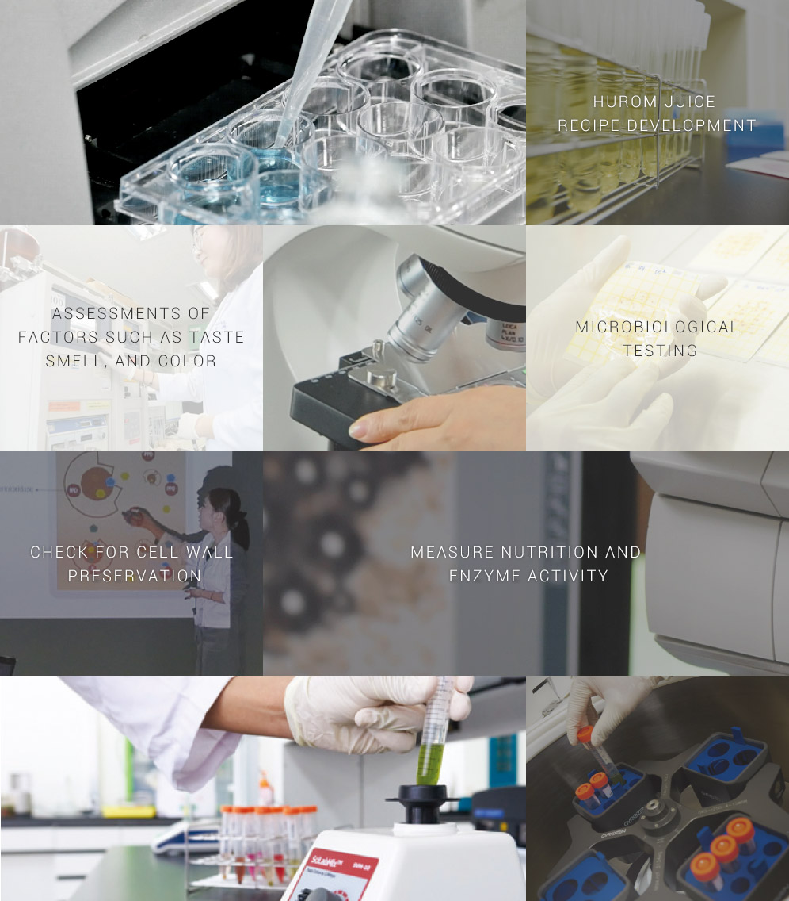
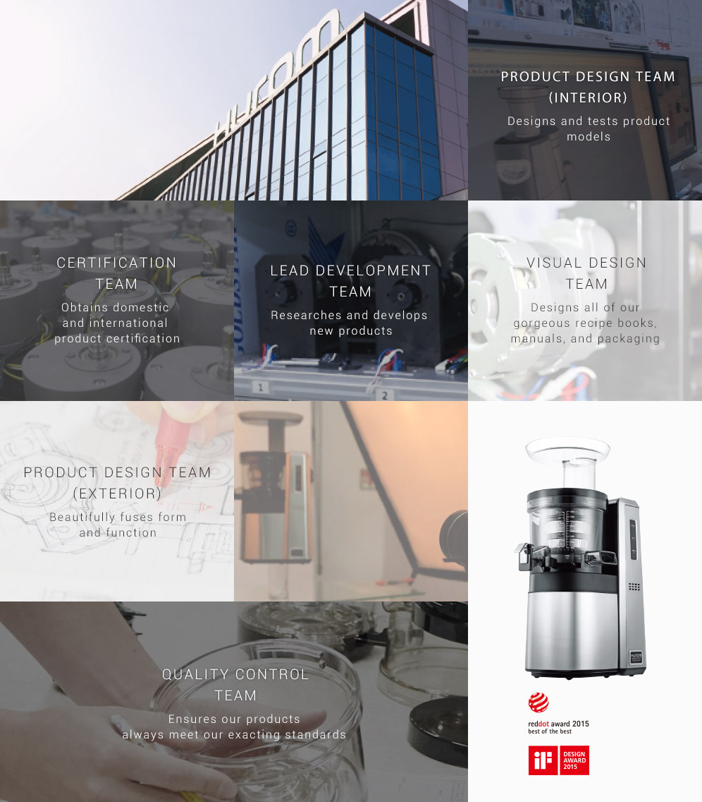
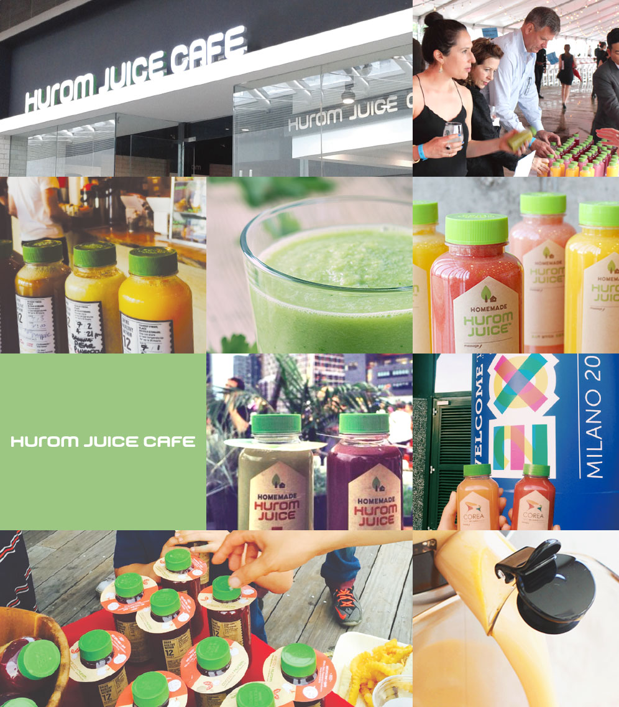

01
MESSAGE
HUROM
YOUNGKI KIM, FOUNDER, CHAIRMAN
"Hurom is a company that is focused on creating products and technologies that benefit people and their health. Therefore, Hurom seeks to contribute to the health and happiness of people all over the world through our slow juicers, as well as other health-conscious appliances, and 100% natural Hurom juice."
HUROM
Hurom is a compound word of “human” and “ii-rom ” the Korean word for “benefit”, meaning “Giving benefit to the people”. Hurom’s mission is to have an entrepreneurial spirit in creating a product that contributes to the health of humankind.
HUMON + II-ROM
02
VALUES
- PEOPLE t
- To put people and their needs first
- ETHICS
- To contribute to world health
- INNOVATION
- To develop state-of-the-art kitchen appliances and market-leading technologies
- PASSION
- To help people lead vibrant lives through healthy eating habits
03
VISION & MISSION
Hurom’s foundation is built on the idea that the most trustworthy food is made at home; knowing what is in it and how it is made. We strive to become a global health brand that creates health-conscious kitchen products that inspire healthy eating habits and ultimately influence world health.
04
HUROM’S INGENUITY
“Hurom” was created from the passion and perseverance of Youngki Kim, the chairman and founder.
It embodies his idea of wanting to contribute and provide access to the best nutrition one can get from nature,
especially fruits and vegetables, in order to live happy and healthy lives.
- THE COMMITMENT TO CONTRIBUTE TO HUMAN HEALTH
- brought us to create the Hurom slow juicer
- MAINTAIN A CLOSE RELATIONSHIP WITH NATURE
- In order to be healthy
- HEALTHY EATING
- Taking in essential nutrients from fruits and vegetables
- CRAFTSMANSHIP
- Persevered through many challenges
05
HUROM SCIENCE
At our R&D Center we improve our products, research nutrition, and study healthy lifestyles.
HUROM BIO-FOOD RESEARCH CENTER
Our ultimate goal is to promote a culture of healthy food and eating.
So we study the flavor and nutrition of all kinds of fruits and vegetables
to create specialized, balanced Hurom Juice recipes.
WE TAKE PRIDE IN OUR SPECIALIZED,
NUTRITIONAL RECIPES, AND OUR INTEGRATIVE
APPROACH IN CONSUMER LIFESTYLE STUDIES.

- HUROM JUICE RECIPE DEVELOPMENT
- ASSESSMENTS OF FACTORS SUCH AS TASTE SMELL, AND COLOR
- MICROBIOLOGICAL TESTING
- CHECK FOR CELL WALL PRESERVATION
- MEASURE NUTRITION AND ENZYME ACTIVITY
HUROM R&D CENTER
To create, test, and deliver better products and technologies to our customers.

- PRODUCT DESIGN TEAM (INTERIOR) Designs and tests product models
- CERTIFICATION TEAM Obtains domestic and international product certification
- LEAD DEVELOPMENT TEAM Researches and develops new products
- VISUAL DESIGN TEAM Designs all of our gorgeous recipe books, manuals, and packaging
- PRODUCT DESIGN TEAM (EXTERIOR) Beautifully fuses form and function
- QUALTIY CONTROL TEAM Ensures our products always meet our exacting standards
- reddot award 2015 best of the best - iF DESIGN AWARD 2015
06
HUROM WORLDWIDE
Our healthy products are in 85 countries,
and we have subsidiaries in China, The United States, India, and Japan.
- Denmark
- England
- Netherlands
- Rumania
- Latvia
- Lithuania
- Germany
- Croatia
- Italy
- Botswana
- Morocco
- Israel
- Syria
- Kywait
- Turkey
- Georgia
- Russia
- China
- HongKong
- Thailand
- Republic of South Africa
- Korea
- Qingdao
- Taiwan
- Japan
- Vietnam
- Malaysia
- Indonesia
- Austrailia
- Tahiti
- New Zealand
- Canada
- Guatemala
- Tahiti
- Chile
- USA
- Costa Rica
- Panama
- Colombia
- Brazil
- Ecuador
- Argentina
07
HUROM HISTORY
2015
- 07 Opened HUROM in Flagship Lotte Department Store
- 06 Launched Hurom juice at NY COFFEED Independence Day fireworks with Hurom
- 05 Opened Hurom Juice Café Ho Chi Minh Vietnam branch Sponsored Hurom juice at the Milano Expo Corea Pavilion(for the OECD Forum)
- 04 Opened Hurom Mitskosi department store Japan branch
- 03 Participated International Home and Housewares Show (IHHS)
- 02 Participated Ambiente Exhibition in Germany
2014
- 12 Awarded Asia’s Product of the Year 2014
Hurom Juice Café awarded as Asia’s Most Noticeable Café 2014 - 11 Won Social Media Award in Home Appliance category
- 09 Launched homemade, bottled Hurom Juice
Entered Vietnamese market with a home appliance and juice café complex store
Participated Internationale Funkaustellung Berlin (IFA) - 08 Opened South Korea’s first premium complex store in Hyundai Department Store
- 04 Participated HOTELREX Exhibition in Shanghai
Established Human Resource Development Center in Sancheong - 03 Participated International Home and Housewares Show (IHHS)
- 02 Participated Ambiente Exhibition in Germany
- 01 IF Design Awards (2 Generation Hurom)
Opened Hurom Juice Café Hanoi Vietnam branch
2013
- 12 Awarded $100 Million Export Tower
Opened Hurom Juice Café Premium outlet Icheon branch
Awarded Asia’s Product of the Year 2013 - 10 Launched 2 Generation Hurom Slow Juicer
Opened the 1st HUROM Juice cafe at Shanghai in China
Opened the 3rd HUROM Juice cafe at Xian in China
Planned ‘sharing with the nation’ in Korea. Commended by the Strategy and Economy Minister - 09 Participated in the IFA Exhibition in Germany Selected as a GOOD DESIGN in 2013
- 08 Opened the 1st HUROM Juice cafe at Shanghai in China
Participated in the 24th Baby Fair. - 06 International Design Excellence Awards
- 05 Winner redot design award in 2003.
Opened Hurom Juice Café Gwanghwamun branch
Participated China International Import Expo (CIE) in Kunshan.
2012
- 12 Selected as a World-Class Korean Product again in 2012
Awarded $20 Million Export Tower on 49th Annual Trade Day
Hurom LS awarded $50 Million Export Tower. - 09 Established Hurom China Inc.
Completed Factory No.2 in Gimhae Industrial Complex.
Completed Factory No.3 in Tumen City, China
Participated Internationale Funkaustellung Berlin (IFA) - 07 Opened Hurom Juice Café “Hurom Farm” (Dosandaero Branch)
- 05 Participated China International Import Expo (CIE) in Kunshan
- 04 Participated Canton Fair
- 03 Participated International Home and Housewares Show (IHHS)
- 02 Participated Germany Consumer Goods Exhibition (Ambiente)
2011
- 11 Established Hurom Farm Inc.
- 10 Participated ‘Korean Special Exhibit’ at Harrods Department Store in the UK.
- 09 Participated Internationale Funkaustellung Berlin (IFA 2011)
- 06 Changed company name from Donga Industry Co., Ltd to Hurom Co., Ltd.
Established Hurom Japan Inc.
Completed Hurom R&D Center
2010
- 11 Hurom Slow Juicer selected as World Class Korean Product in 2010
Hurom Slow Juicer awarded WIPO Award at Korea Invention Patent Exhibition. - 10 Awarded $5 Million Export Tower Presidential Award on ‘47th Annual
Trade Day’ Hurom Slow Juicer awarded Gold Medal at German Nuremburg International Invention Exhibition. - 06 Hurom Slow Juicer awarded Gold Medal at US Pittsburgh International Invention Exhibition.
- 04 Launched Hurom Slow Juicer to TV home shopping
- 01 Established Hurom LS Industry(Korea)
2009
- 02 Launched China TV home shopping (CCTV)
2008
- 03 Developed slow juicer brand ‘Hurom’ using SSS™ method
2005
- 10 Researched and developed Slow Squeezing System (SSS™) method.
- 01 Developed and released electric, premium green juicer (DH-1000)
2004
- 11 Awarded Gold Medal at Seoul International Exhibition.
- 10 Selected as certified company with World Class Korean Product– Minister of Commerce, Industry, and Energy.
- 07 Established Donga Industry Chinese Branch office (Qing Dao)
2003
- 12 Developed and released electric, green juicer (DH-900)
2002
- 11 Awarded Prime Minister Citation on 39th Annual Trade Day
- 05 Electric green juicer awarded Bronze Medal at Germany International Idea Invention Exhibition
2001
- 11 Awarded Bronze Medal at ‘2001 Korea Patent Technology Fair’ by Korea Chamber of Commerce.
- 08 Selected as Promising Export Small and Medium Business.
- 05 High-Sense all-around green juicer becomes a hit product of year 1997 from CJ 39 Shopping.
1998
- 01 Developed and sold electric green juicer ‘Oscar all-around green juicer’ (Model 502)
1996
- 07 Changed company name to Donga Industry Co., Ltd. (home and kitchen appliances)
- 06 Acquired patent for electric green juicer invention (registration no. 1000002) by the Korean Intellectual Property Office
1995
- 07 Developed green juicer ‘High-Sense Magic’ (Model 301)
1993
- 03 Developed green juicer ‘Handy Nine’ (Model 101)
1979
- 10 Established Panjung Manufacture (electronic parts and kitchen appliances manufacturing)
1974
- 10 Established Gaesung Engineering TV parts manufacturing company)
08
HUROM JUICE CULTURE
HUROM creates a new fresh juice culture

- PRODUCT DESIGN TEAM (INTERIOR) Designs and tests product models using a 3D printer
- CERTIFICATION TEAM Obtains domestic and international product certification
- LEAD DEVELOPMENT TEAM Researches and develops new products
- VISUAL DESIGN TEAM Designs all of our gorgeous recipe books, manuals, and packaging
- PRODUCT DESIGN TEAM (EXTERIOR) Beautifully fuses form and function
- QUALTIY CONTROL TEAM Ensures our products always meet our exacting standards
HUROM JUICE
Hurom Juice is made from the world’s first slow squeezing technology
the most natural and nutritious juice you can find, made from fresh fruits and vegetables.
-
HEALTHY JUICE FROM
FRUITS AND VEGETABLES Balanced glass of juice. -
HOMEMADE
JUICE With care. -
FRESH JUICE
WITH LIVE ENZYMES Vital nutrients and enzymes.
TWO WAYS TO ENJOY HUROM JUICE
AT HOME
In the comfort of your own home healthy homemade Hurom Juice
AT HUROM JUICE CAFE
Enjoy the same homemade taste, outside and on the go
HUROM JUICE CAFES
At Hurom juice cafes, we make personalized juices to order
using the season’s freshest fruits and vegetables.
- THE HEALTHIEST JUICE
- The world's first and best slow juicer makes the most nutritious juices for you to enjoy!
- HEALTHY LIFESTYLE
- The Hurom Juice Cafe is the perfect place to jumpstart a healthy lifestyle.
- CUSTOMIZED JUICE
- Our experts study and analyze recipes to match your personal preferences.
- MADE BY PHYTOS
- Our juice specialists called Phytos, make each glass of juice to order, or the freshest flavor and nutrition.
09
HUROM JUICE CAFES
WORLDWIDE
Hurom juice cafés are expanding globally
with a goal of opening 5,000 stores by the end of 2017.
Korea
- 01 Dosandaero
- 02 Homeplus Busan Asiad
- 03 Gwanghwamun
- 04 Homeplus Ulsan
- 05 Lotte Icheon
- 06 Homeplus Incheon Jakjeon
- 07 Hyundai Department Store Cheonho
Global
- 01 USA – COFFEED
- 02 China – 13 retail locations, over 200 partnerships
- 03 Vietnam – 2 retail locations, 4 retail locations by the end of 2015
- 04 HThailand, Indonesia, Malaysia, and more retail locations in progress